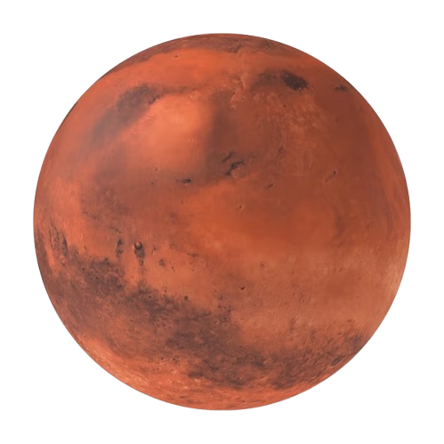

المريخ هو الكوكب الرابع من الشمس ويُعرف بـ "الكوكب الأحمر" بسبب لونه الذي يعود إلى أكسيد الحديد. يمتلك المريخ سطحًا صخريًا مليئًا بالفوهات والجبال، بما في ذلك أكبر بركان في النظام الشمسي، أوليمبوس مونس.
يتميز المريخ بجو رقيق يتكون أساسًا من ثاني أكسيد الكربون، ودرجات حرارة تتراوح بين -125 درجة مئوية في الشتاء إلى 20 درجة مئوية في الصيف. يدور المريخ حول الشمس في مدار يستغرق حوالي 687 يومًا أرضيًا. يُعتبر المريخ هدفًا رئيسيًا للبحث عن الحياة خارج كوكب الأرض.
